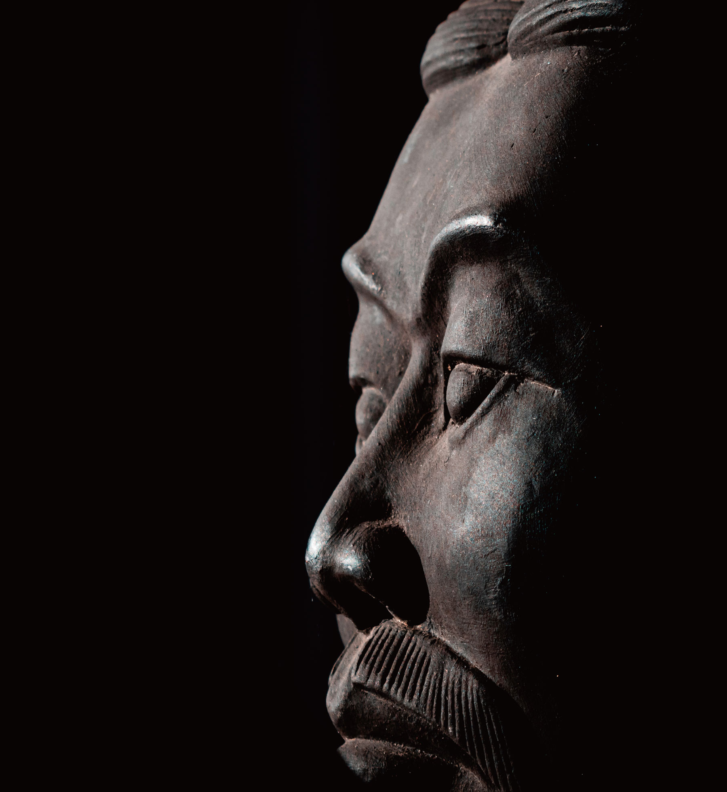

COLLEGE OF HUMANITIES • 인문대학

|
21세기 동북아시대를 주도할 글로벌 인재 양성
|
|
중어중문학과
DEPARTMENT OF CHINESE LANGUAGE AND LITERATURE
|
|
 chilan.ssu.ac.kr
chilan.ssu.ac.kr
|
 02-820-0390
02-820-0390
|
|
학과 설립
1992 년
|
입학 정원
29 명
|
교직과정 개설여부
o
x
|
전임교원
7 명
|
학과 소개
중국은 현재 세계에서 가장 높은 성장 잠재력을 지닌 나라다. 우리나라와는 지역적
으로도 인접해 오래전부터 정치, 경제, 문화적으로 밀접한 영향을 주고받고 있다.
중어중문학과는 이러한 현실에 부응하여 양국의 교류를 위한 국제적 능력과 감각을
두루 갖춘 인재를 키워내는 것을 교육 목표로 한다. 중국어의 구조에 대한 정확한
이해를 바탕으로 능숙하게 중국어를 구사하는 능력뿐 아니라, 역사·정치·문화 전반에
걸쳐 중국을 올바르게 이해할 수 있도록 체계적인 교과 과정을 운영하고 있다.
학과 인재상
세계적·국제적 감각을 갖춘 글로벌 인재
중국의 사회·문화·언어에 정통한 지역 전문가
교과 과정
주요 커리큘럼
기초중어ⅠⅡ, 초급중어회화작문ⅠⅡ, 중국문화의지평
중급중어회화, 중급중어작문, HSK중국어, 중국어학의 이해,
중국어문법의기초, 중급중어강독, 중국서정문학의 세계, 중국문언문의이해,
중국고전과 현대생활, 중국문학의지평
중어실용회화, 중국어문형과실용구문, 한자로 보는 중국문화, 고급중어
강독, 중국서사문학의 세계, 중국소설선독, 중국문학사의창조와혁신,
중국현대문학의세계, 중국현대문화의 세계, 중국지역학개론, 창의적 문제
해결(캡스톤 디자인)
시청각중국어, 경제통상중국어, 중국어학의응용, 중국고전문학특강,
중국의 문화산업과 미디어, 중한번역의원문 분석, 중한번역실습 2,
중국지역조사실습
선택교과 가이드
일반선택
영어Ⅰ, 세계지리, 세계사, 동아시아사, 사회·문화, 윤리와사상, 중국어Ⅰ,
한문Ⅰ
학생활동
동아리 및 소모임 소개
캉캉(콘텐츠 활용 회화 증진), 함께누리(HSK, 한자자격시험스터디),
차이나고(중국지역탐구 및 여행)
학과 특색 프로그램
중국어 번역 경진대회(중국어 원문을 한글로 번역, 번역대회 개최 및 번역 작품
출간, 2013년, 2014년, 2015년 대외 번역대회 수상자 배출)
중국어 연설문 발표대회(중국어 표현에 대한 자신감 향상)
창의적 문제해결(캡스톤 디자인) 교과과정 성과전시회
우수 학생 및 학과 성과
2019년 ㈜ 금축인터내셔널 고용노동부 강소기업 선정
2020년 김정수 동문 전북대 중어중문학과 교수 임용
취득 가능 자격증
교직과목 이수 시 2급 정교사 자격증
한어수평고시[HSK](주관: 중화인민공화국 교육부 산하 중국국가한판)
OPIC 중국어(주관: ACTFL)
중국어 관광통역안내사(주관: 한국산업인력공단)
진로 관련
졸업 후 진로
무역회사, 금융기관, 공기업, 외국계기업, 항공사 및 여행사, 방송사 및 언론사, 통·번
역가, 대학교수및중·고등교사, 국내외대학원진학, 창업
교수 연구 분야
중국어학, 중국문학, 중국문화학, 중한번역학, 중국지역학, 중국현대사회, 중국콘텐츠,중국영화
Q&A
Q 중어중문학과는 반드시 중국어를 잘하는 학생들만 지원해야 하나요?
A
중국어는 중어중문학과에서 학습하는 도구언어일 뿐입니다. 현대사회는
다양한 분야에 관심을 가지고 창조적으로 융합하는 인재를 원하고 있습니다. 따라서
인문학적 교양과 능력을 가지고 다른 문화와 사회를 배우려는 적극적인 열정을
가진 학생이라면 얼마든지 환영합니다.
소개영상